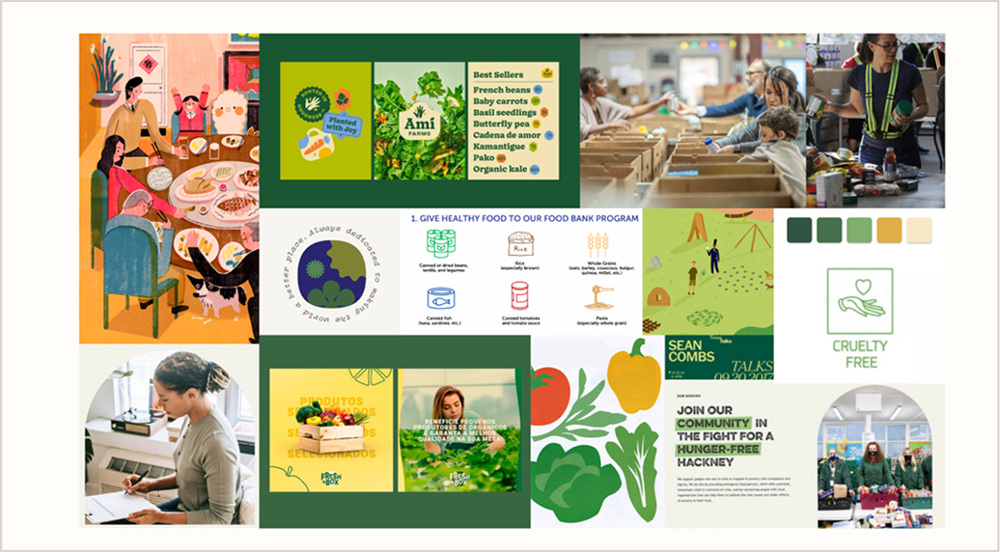
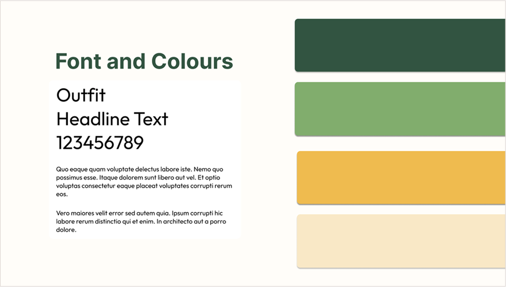
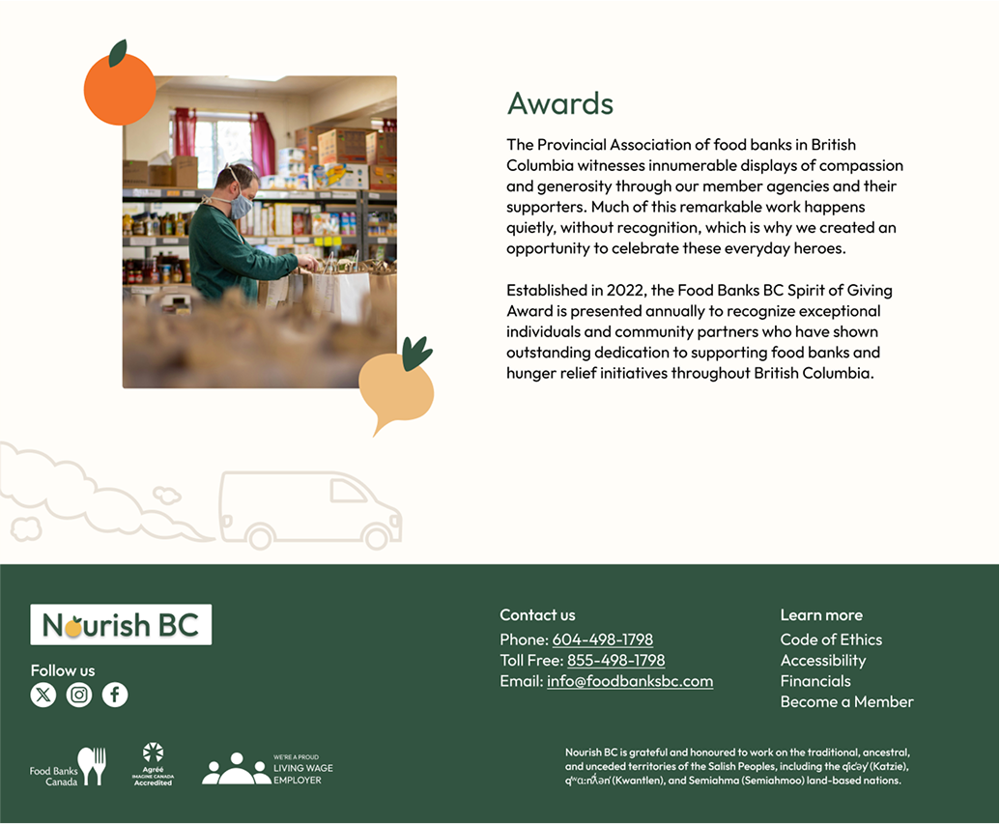
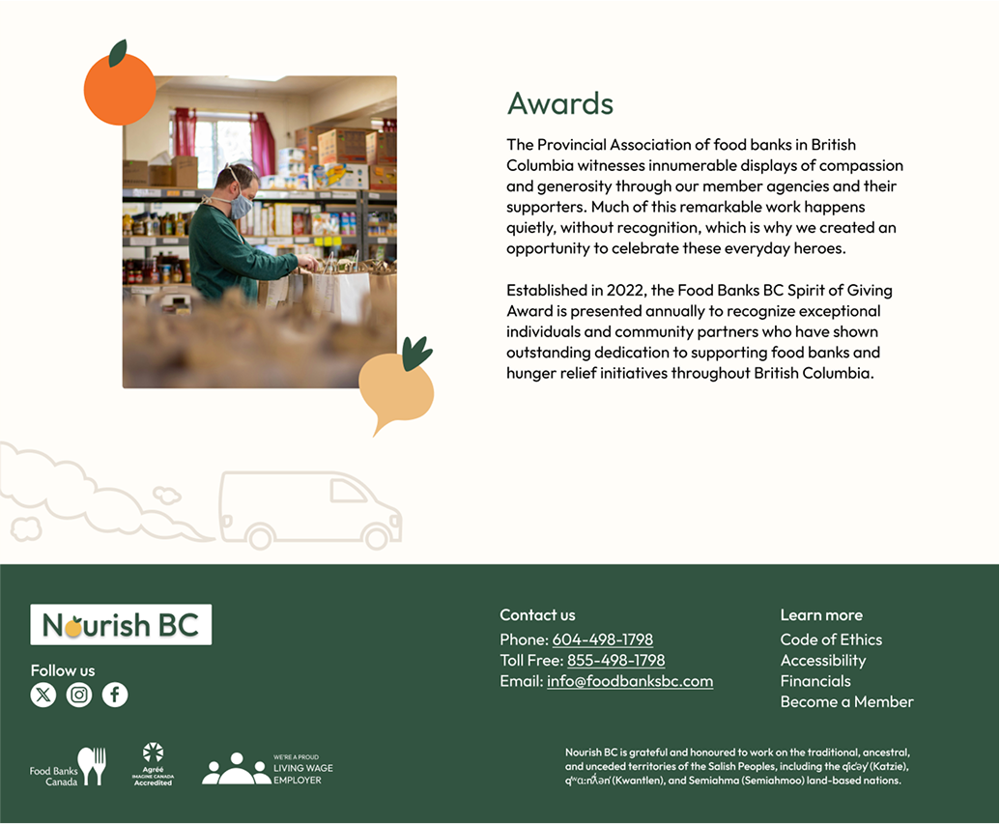

Website Redesign
One of the school projects we got was to redesign an existing social impact organization. I decided to redesigned a Food bank website, focusing on creating a more visually engaging experience. The original site had cluttered navigation, outdated visuals, and overall felt a bit colder than I would have liked it to. A goal I set for myself was to add fun graphic elements because I'd like to focus more on design in the future.
I started the process by researching the original website, looking into the brand goals and characters. I built a case as to why it was worth being redesigned, updated the colours, and picked a new name that reflected the brands values. I then made a word mark and created a moodboard to best communicate the feeling I was going for. The last weeks of the project were spent working on the wireframes and mockups for the website. I'm quite proud of what I managed to accomplish for this project. There were a lot of graphic elements that I created and didn't use, and in the future I would maybe spend less time trying to perfect certain aspects as it slowed down my process more than I would have liked.
Case Study
For this project, I redesigned the website for a local food bank. The goal was to create a visually engaging, user-friendly, and accessible experience that better serves the organization’s mission. During the weeks I was working on this project I learned a lot about website components. I had to make a donation form, cards describing different steps in their food distribution process, and a couple other things. I started with a landscape analysis to understand their role and how they serve the community.
The original website had several usability and branding challenges, including:
After building a case as to why I selected this website for my redesign, I began to redefine their branding, looking at new typefaces, updated colours and some graphic elements. I wanted the redesign to maintain a professional feel while introducing more modern, inviting design elements.
Below is a photo of my mood board, as well as the font and colours I selected:
 Wireframes & Mockups
The Next step in the process was to use the research as well as the rebranding that I came up with to design wireframes and mockups for both desktop and mobile. This step of the process took the longest time, especially because I had to play around with the spacing of the images, deciding where to put the graphic elements I designed. I also spent a lot of time designing graphic elements that I decided not to use as they didn’t fit the style and simplicity of the rest of the website
The original website had several usability and branding challenges, including:
Final Thoughts
In the future, I would like to improve my sizing and incorporate more accent colours throughout the site, as this was something I struggled with. While there are areas for refinement, I’m proud of the progress I’ve made, especially with my imagery. The new visuals feel more dynamic and engaging compared to the original ones, adding depth to the overall design. This project has been a valuable learning experience, and I look forward to applying these insights to future work.
 
